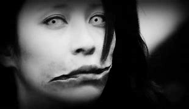

Kuchisake-onna, también conocida como "la mujer de la boca cortada", es una figura legendaria del folclore japonés que ha generado miedo y fascinación durante décadas. Su historia se remonta a tiempos antiguos, pero se ha mantenido viva a lo largo de los años gracias a su presencia en la cultura popular japonesa y su posterior difusión a nivel internacional.
La leyenda de Kuchisake-onna cuenta la historia de una mujer hermosa que vivió en el Japón feudal. Según la historia, esta mujer fue infiel a su esposo, quien, en un ataque de ira, la mutiló cortándole la boca de oreja a oreja. Después de su muerte, su espíritu regresó como un yokai, una entidad sobrenatural, con una apariencia terrorífica y una obsesión particular por la belleza facial.
Según la leyenda, Kuchisake-onna se presenta como una mujer atractiva con un vendaje que cubre su rostro. Se dice que ella se acerca a sus víctimas, generalmente niños, en la noche y les pregunta si la consideran hermosa. Si la respuesta es afirmativa, Kuchisake-onna revela su rostro, mostrando una boca grotescamente cortada de oreja a oreja, y pregunta: "¿Y ahora?".
En este punto, las opciones de la víctima son limitadas y espeluznantes: si vuelven a responder afirmativamente, Kuchisake-onna los cortará a la misma medida que ella; si responden negativamente, los matará de inmediato. Algunas versiones de la leyenda sugieren que una respuesta evasiva puede desconcertar a Kuchisake-onna lo suficiente como para que la víctima pueda escapar.
La leyenda de Kuchisake-onna comenzó a circular en la década de 1970, aunque sus orígenes exactos son inciertos. Algunas versiones de la historia sugieren que Kuchisake-onna era una mujer víctima de una cirugía plástica fallida, mientras que otras versiones afirman que era una víctima de un accidente de tráfico.
Kuchisake-onna ha tenido un gran impacto en la cultura popular japonesa, convirtiéndose en un tema recurrente en historias de terror y folclore urbano. Es común que los niños japoneses se desafíen entre sí para invocar a Kuchisake-onna, similar a otras leyendas urbanas como Bloody Mary en Occidente. La historia de Kuchisake-onna sirve como un recordatorio de los miedos y ansiedades presentes en la vida cotidiana y la cultura juvenil japonesa.
La leyenda de Kuchisake-onna ha sido adaptada en numerosos medios, incluyendo películas, programas de televisión, libros y videojuegos. Estas adaptaciones a menudo reinterpretan la historia para reflejar los miedos contemporáneos y explorar temas como la belleza, la venganza y la obsesión.